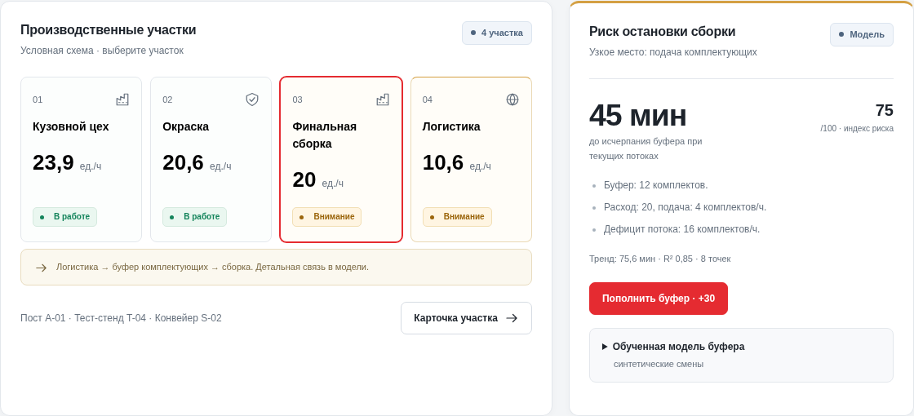

01
Состояние линий
Выпуск, загрузка и простои должны быть видны на одной панели.
Allur Plant Twin — цифровой двойник производственной цепочки с контролем потоков и объяснимым прогнозом.
Задержка деталей в логистике может остановить сборку. Оператору нужно видеть последствия отклонения до исчерпания запаса.
Выпуск, загрузка и простои должны быть видны на одной панели.
Карточка инцидента связывает участок, событие и действие оператора.
Расчёт запаса показывает, сколько времени осталось на восстановление подачи.

React-приложение с локальной готовой сборкой, история текущей сессии, импорт JSON, выгрузка CSV и отчётов.
Адаптер данных предприятия, база временных рядов, реальные схемы участков и доступ по ролям.
Буфер: 12 комплектов. Расход: 20 в час. Подача: 4 в час. При сохранении потоков запас исчерпается через 45 минут.
Индекс риска: 75 / 100Лес из 64 деревьев оценивает исчерпание буфера на 60 минут при меняющейся подаче. Сгенерированы 600 смен; 119 смен отложены для оценки.
Полнота: 90,2% · precision: 72,6%
Модель находит больше событий, но даёт больше ложных предупреждений, чем расчёт баланса. F1 расчёта выше.
Оценка на синтетических данных. На истории Allur модель пока не проверена. Поломки оборудования не входят в цель.
Логистика подаёт меньше комплектов, чем расходует сборка.
Прогноз показывает горизонт; после исчерпания буфера линия останавливается.
Пополняет буфер на 30 комплектов и восстанавливает подачу до 21/ч.
Статус и риск пересчитываются, действие фиксируется в отчёте.
Есть сценарий дефектов окраски: исправление влияет на новые операции, сохраняя накопленную историю брака.
Сравнение одинаковых сценариев на горизонте 2 часов: без вмешательства сборка останавливается через 45 минут; с пополнением через 30 минут продолжает работу.
В отчётах время пополнения меняется ползунком. Укажите свои затраты на простой и пополнение: панель покажет условный баланс и порог окупаемости. Стоимости по умолчанию пустые; экономия Allur не измерялась.
Проверка 0.9: 26 тестов пройдены; готовая React-сборка проверена на ПК и телефоне. Перенос моделей сверён на 20 443 записях; веса не менялись. Обученная модель исчерпания комплектующих работает на синтетических данных. Для применения на заводе нужны реальная история, переобучение, оценка по времени и интеграции.
364 из 375 записей APS распознаны. 11 пропущены.
508 предупреждений ложные. Порог учитывает высокую стоимость пропуска.
Исходная выборка сохранена. Обучение: 48 000; настройка: 12 000.
Открытые эксплуатационные данные грузовиков Scania CV AB, 2016. Модель различает неисправность APS и другого компонента; отрицательный класс не означает исправную машину.
Нет заводского буфера или горизонта будущей поломки. Диагностика Scania — отдельный модуль; прогноз буфера обучен на синтетических сменах. Применимость к Allur ещё не оценена.